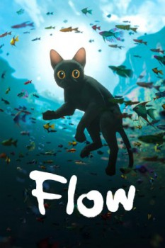

Flow (2024)


Surrender to the storm.

AKA:Straume (Título original)
País:Letonia, 1hr. 25min.
Idiomas:
GénerosAnimación, Fantasía, Aventuras
Director/es:Gints Zilbalodis
Guionistas:Matīss Kaža, Gints Zilbalodis
Códec de vídeo:H.264
Número: 568
TomatoMeter:

97%

98%
Clasificación IMDb:


7.9/10 (78.5K votos)
Certificación:
Argumento:
A solitary cat, displaced by a great flood, finds refuge on a boat with various species and must navigate the challenges of adapting to a transformed world together.
Reparto
Medio: Desconocido,
Prestado: No
Rel. aspecto: Unknown